Create objects in obj level then use as a mesh light in Solaris
Create objects in obj level then use as a mesh light in Solaris
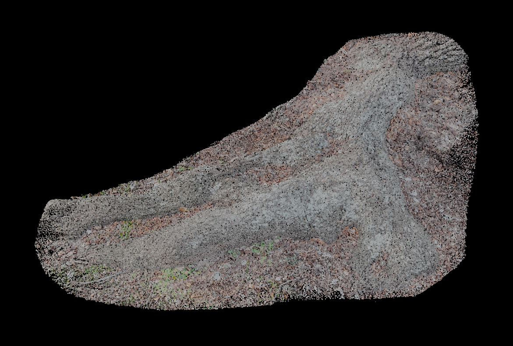
Original Gaussian Splats
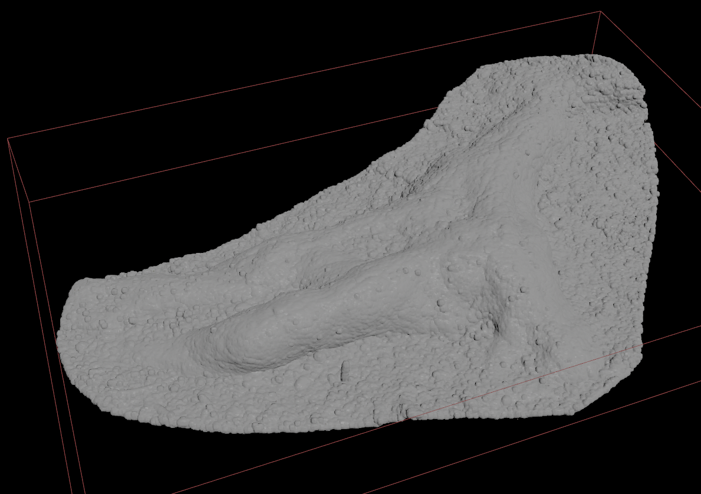
Convert to VDB using VBD from Particles node
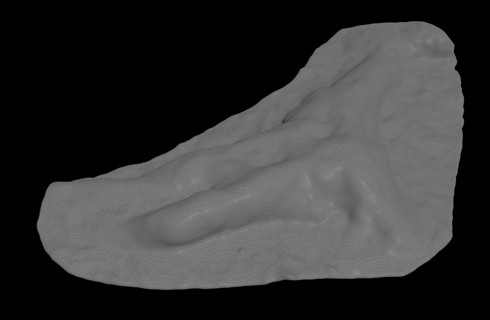
Smooth the VBD and convert to polygon
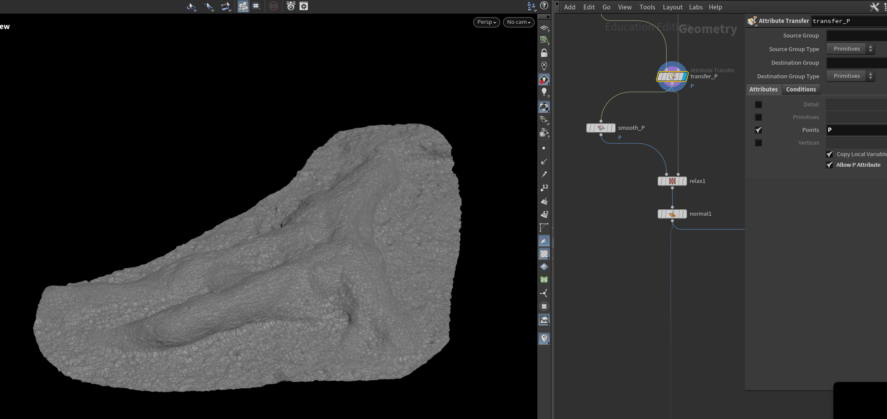
Project the polygon to the original points by using Attribute Transfer to transfer position from original Gaussian Splats points to the polygon
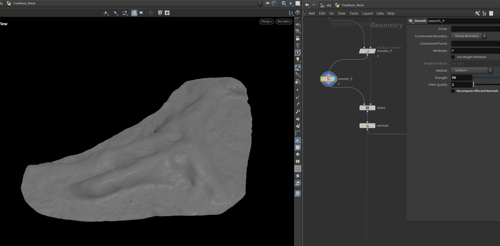
Smooth out the surface
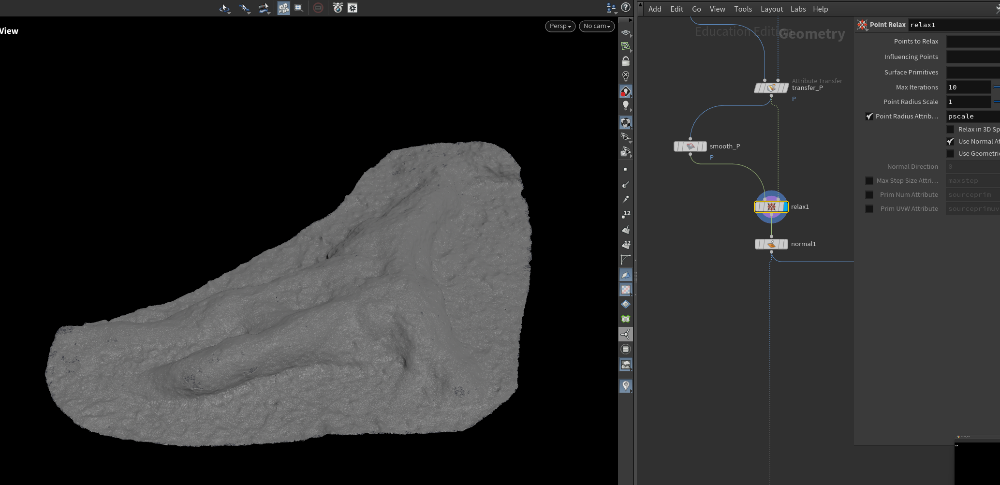
Use Relax node to bring the detail back
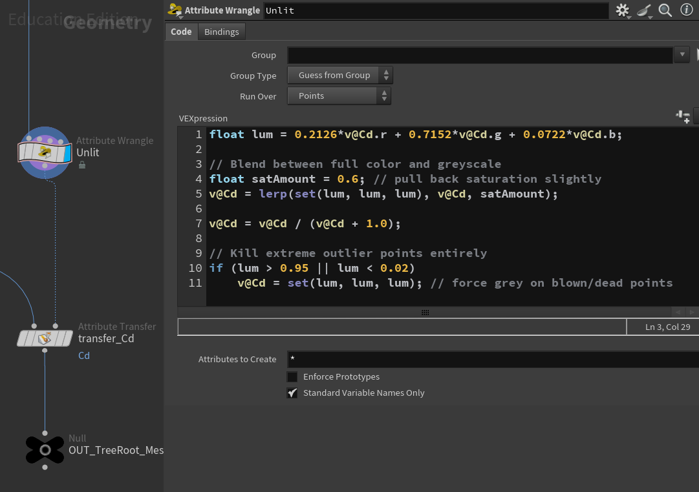
Run VEX code on the original Gaussian Splats point to flatten the color, removing highlight and shadow
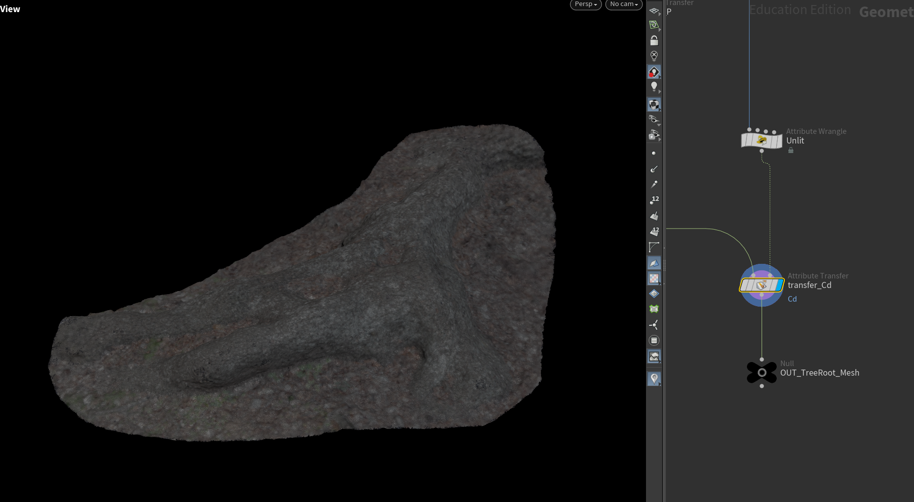
Transfer flatten colors to the polygon
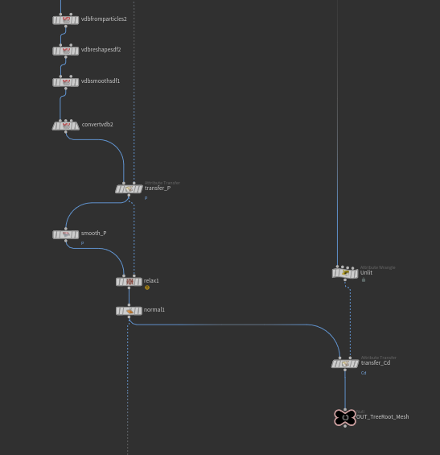
Overall nodes structure
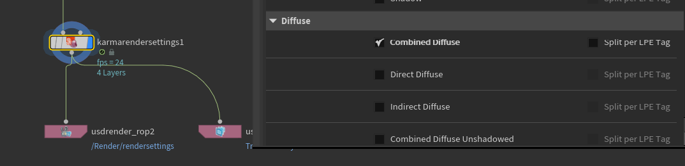
Set up lighting on the geometry and render just combined Diffuse pass from Houdini Karma
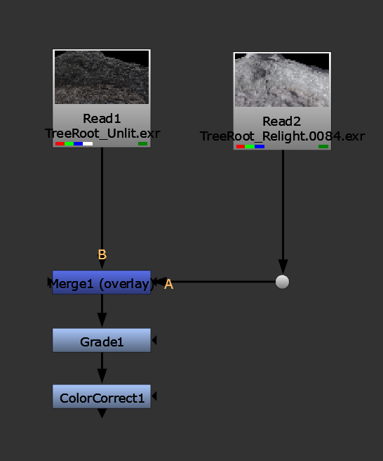
Compositing the lighting on unlit Gaussian Splats (rendering on V-Ray) in Nuke